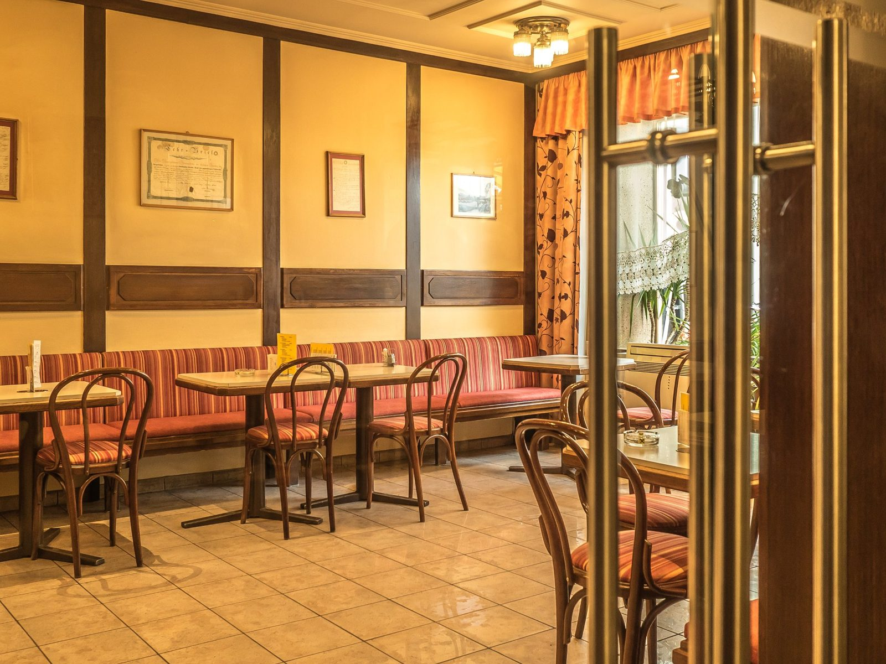
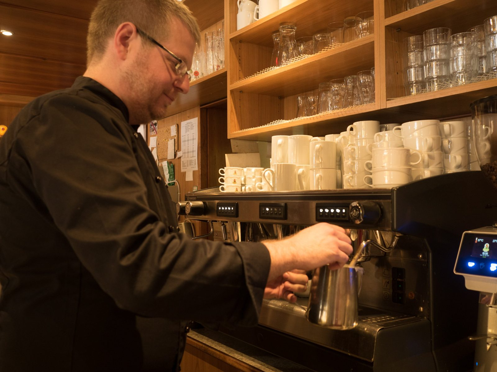
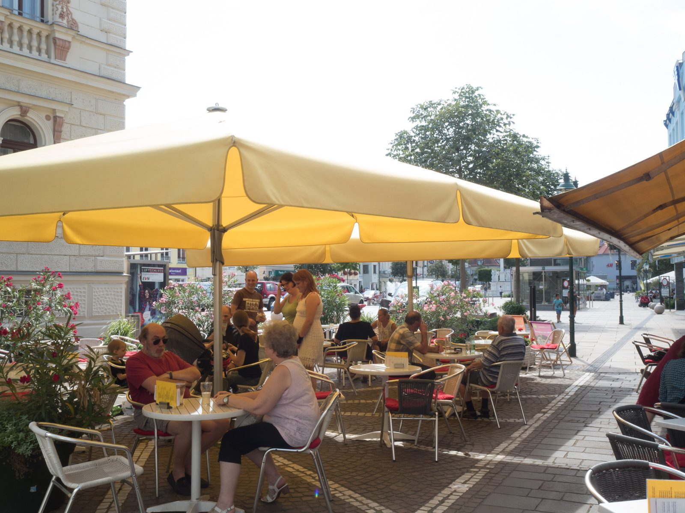
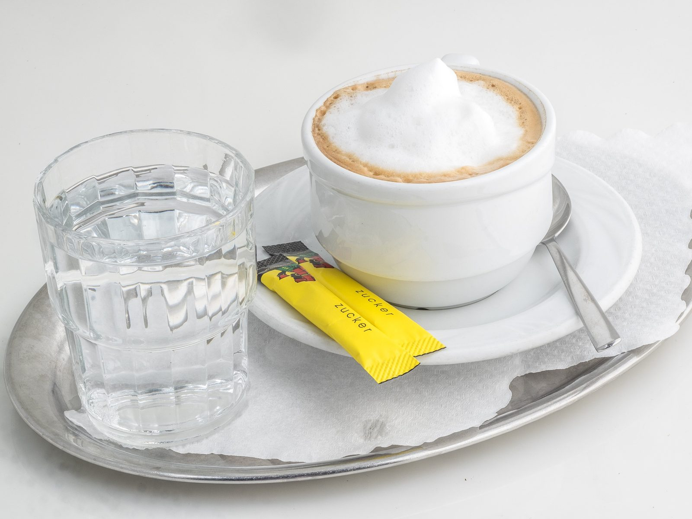
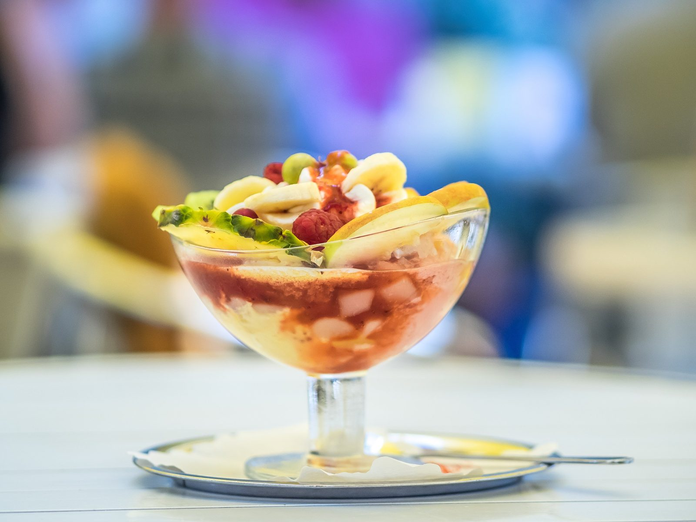
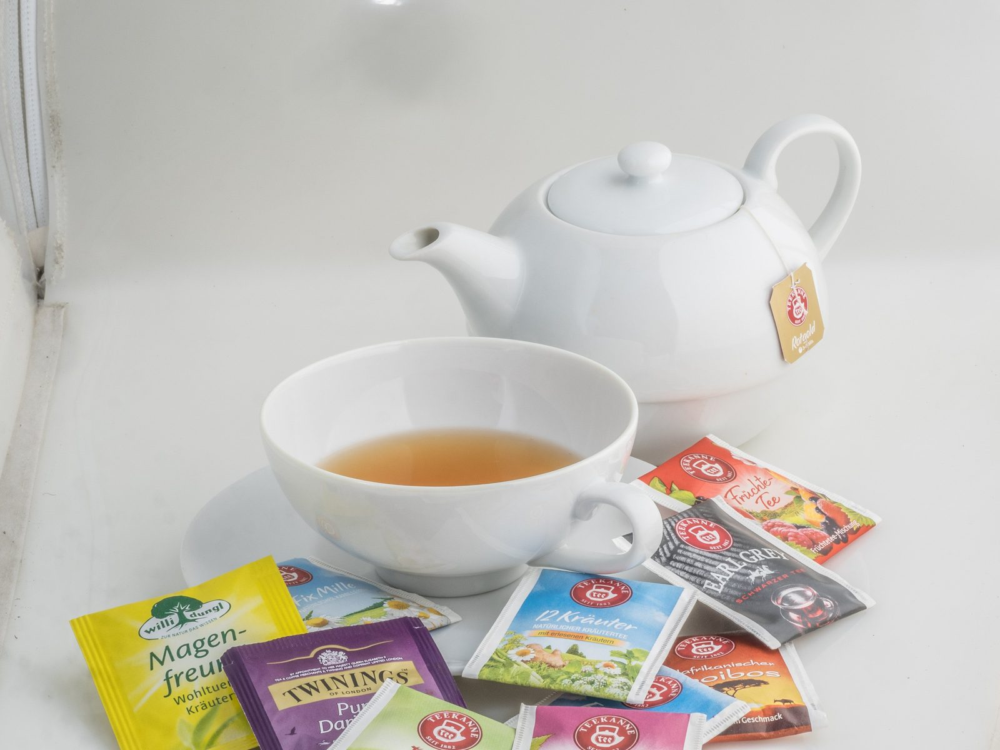
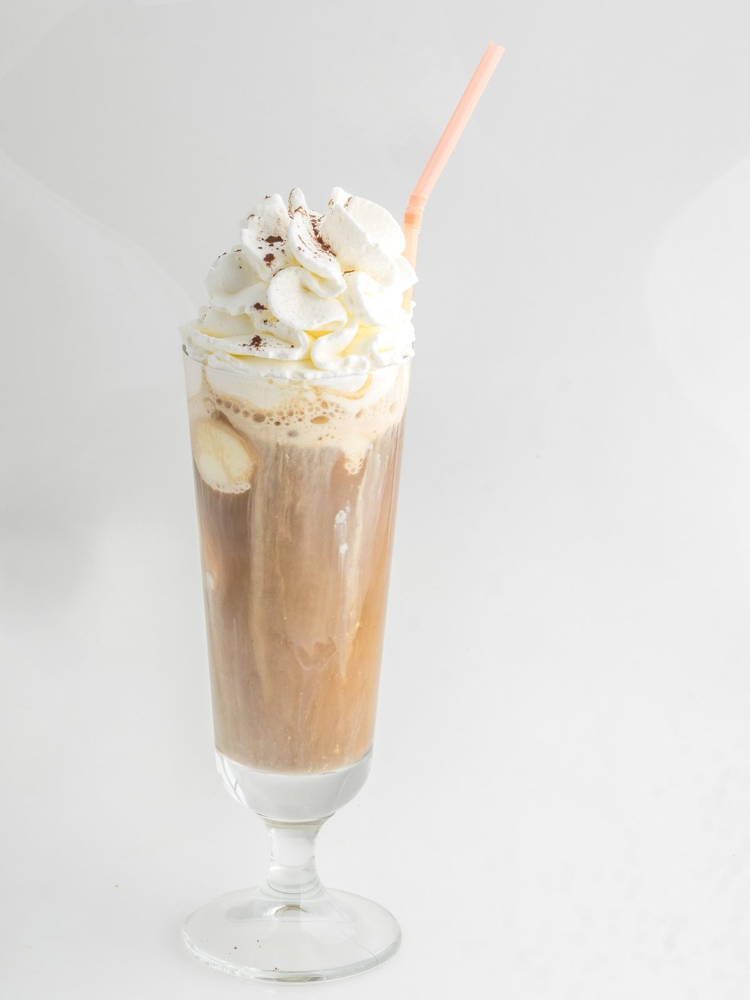
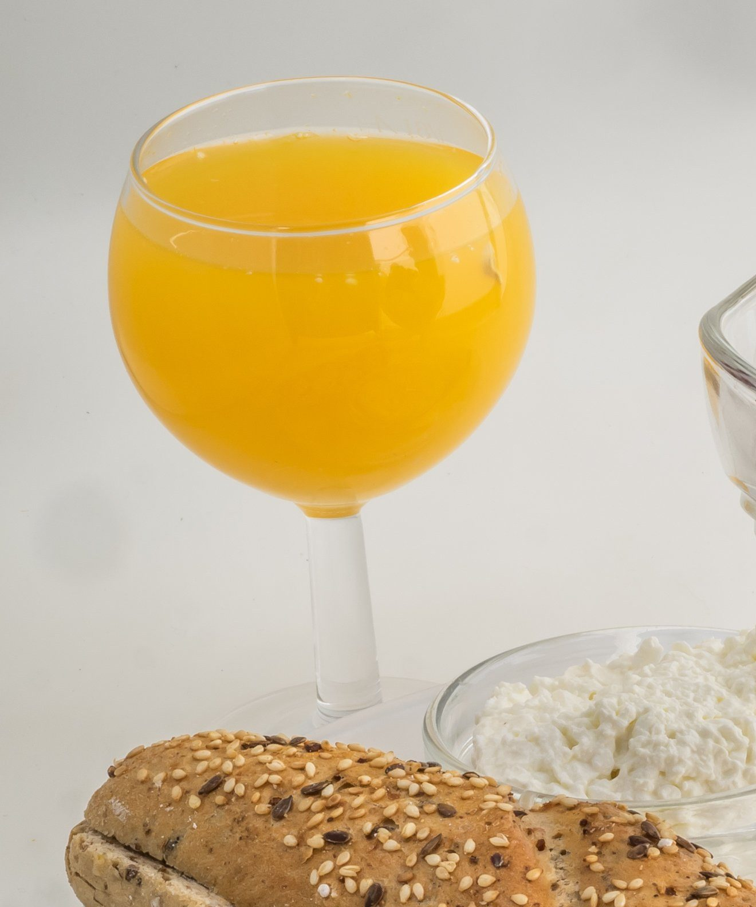
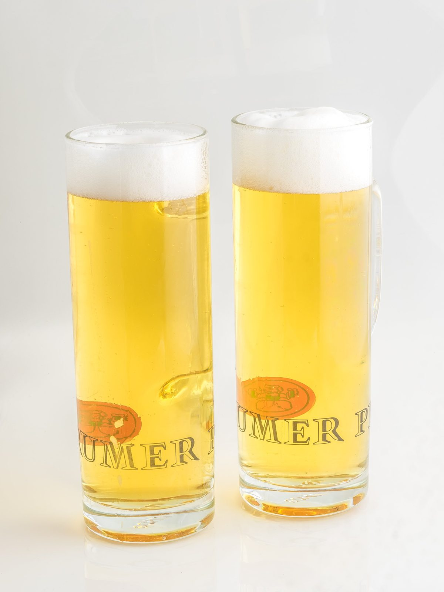

Mauserl
Der Klassiker: Brandteig, streng geheime Mauserlcreme, Schokofondant. Seit den Jahren um 1949 die Tullner Spezialität des Hauses.
€ 4,10
Hauptplatz 31 · Tulln an der Donau
Kaffee, hausgemachte Mehlspeisen und Eis aus eigener Erzeugung – direkt neben der Bezirkshauptmannschaft, fünf Gehminuten von der Donau. Im Sommer im großen schattigen Schanigarten mit Blick auf den Hauptplatz.

Ein Treff für Jung und Alt
Der KÖ
Direkt im Zentrum von Tulln, neben der Bezirkshauptmannschaft und nur fünf Gehminuten von der Donau entfernt, steht seit Generationen die Café Konditorei Köstlbauer. Frühstück ab halb acht, Mehlspeisen aus der eigenen Backstube, im Sommer Eis aus eigener Erzeugung – und ein Schanigarten, der den halben Hauptplatz überblickt.
Alle Konditorwaren gibt es auch zum Mitnehmen: ein Stück Torte für daheim, die Mehlspeisplatte für den Sonntagsbesuch oder das Mauserl, die Tullner Spezialität seit den Nachkriegsjahren.

Aus der Vitrine
Der Klassiker: Brandteig, streng geheime Mauserlcreme, Schokofondant. Seit den Jahren um 1949 die Tullner Spezialität des Hauses.
€ 4,10
Mohncreme und Himbeeren auf Biscuit- und Sacherboden. (A, C, F, G)
€ 4,70
Die KÖ-Spezialität einmal anders: Eclair gefüllt mit Eis, garniert mit Früchten, Erdbeer- und Schokosauce und Schlag. (A, C, F, G)
€ 11,20
„Nach einem guten Kaffee verzeiht man sogar den Eltern.“Oscar Wilde
Öffnungszeiten & Lage
Hauptplatz 31, 3430 Tulln an der Donau · 02272 / 62266

Aktuelles
Es gelten wieder unsere Sommeröffnungszeiten – auch wenn das Wetter manchmal unschlüssig wirkt!
ÖffnungszeitenDienstag, 23.12. 07:30–18:30 Uhr · Mittwoch, 24.12. 07:30–13:00 Uhr · 25.12. bis 28.12.2025 geschlossen · Montag, 29.12. 07:30–18:30 Uhr · Dienstag, 30.12. 07:30–18:30 Uhr · Mittwoch, 31.12. 07:30–13:00 Uhr · 01.01.2026 bis 07.01.2026 Betriebsurlaub. Ab Donnerstag, 8. Jänner sind wir wieder wie gewohnt für Sie da.
ÖffnungszeitenMit dem Beginn der Eissaison haben wir wieder an Sonn- und Feiertagen von 09:00 bis 18:00 Uhr für Sie geöffnet. Auf Ihren geschätzten Besuch freut sich Ihr Cafetier mit Team.
ÖffnungszeitenWir sind am Montag, 23.12. von 07:30 bis 18:30 Uhr, am Dienstag, 24.12. von 07:30 bis 13:00 Uhr sowie am Montag, 30.12. von 07:30 bis 18:30 Uhr und am Dienstag, 31.12. von 07:30 bis 13:00 Uhr für Sie da.
Neujahrsgruß des Cafetiers mit Team.
Ab 10. Dezember 2023 bis Ende März halten wir an Sonn-, Mon- und Feiertagen Ruhetag. Betriebsferien von 1. bis 7. Jänner 2024.
Rechtzeitig zum Beginn der Eissaison: ab 26.03. sind wir an Sonn- und Feiertagen wieder von 09:00 bis 18:00 Uhr für Sie da.
Wir gönnen uns in der ersten Jännerwoche Betriebsurlaub und freuen uns auf ein Wiedersehen ab 10. Jänner 2023.
Am Sonntag, dem 9. Oktober ist beim KÖ der letzte Eistag 2022 – gerne noch einmal auf ein letztes Stanitzerl vorbeischauen.
Von Donnerstag, 28. Juli bis Samstag, 30. Juli gibt es Eiskaffee und Eisschokolade in Aktion – für Shopper und Nichtshopper.
Ab 27.03.2022 wieder an Sonn- und Feiertagen von 08:00 bis 18:00 Uhr geöffnet – und die Eissaison ist gestartet.
Ab Montag, dem 22. November 2021 lockdownbedingt geschlossen; voraussichtlich ab Freitag, dem 26. November wieder Abholung von Mehlspeisen.
Wir freuen uns, Sie wieder im KÖ-Café begrüßen zu dürfen – mit Hinweis auf die aktuellen Öffnungszeiten.
Von 1. bis 6. Jänner geschlossen. Ab 7. Jänner Dienstag bis Donnerstag 10:00–16:00 Uhr, Freitag und Samstag 09:00–16:00 Uhr zur Mehlspeisabholung.
Kategorien im Blog: Öffnungszeiten (14) · Eis (4) · Sommer (3) · Mehlspeise (2) · Winter (2) · Aktion (1) · Kuchen (1) · Silvester (1)
Galerie






Reservieren Sie online Ihren Platz im Café oder im Schanigarten – oder bestellen Sie Mehlspeisen und Eis zum Abholen vor.